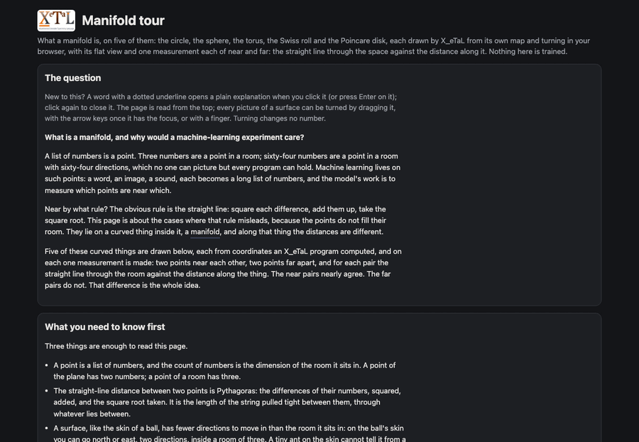
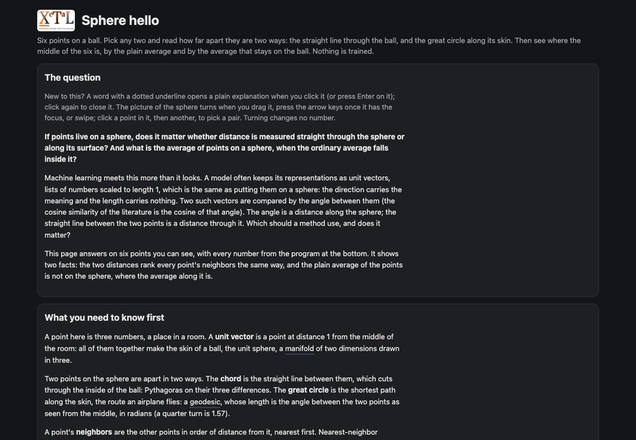
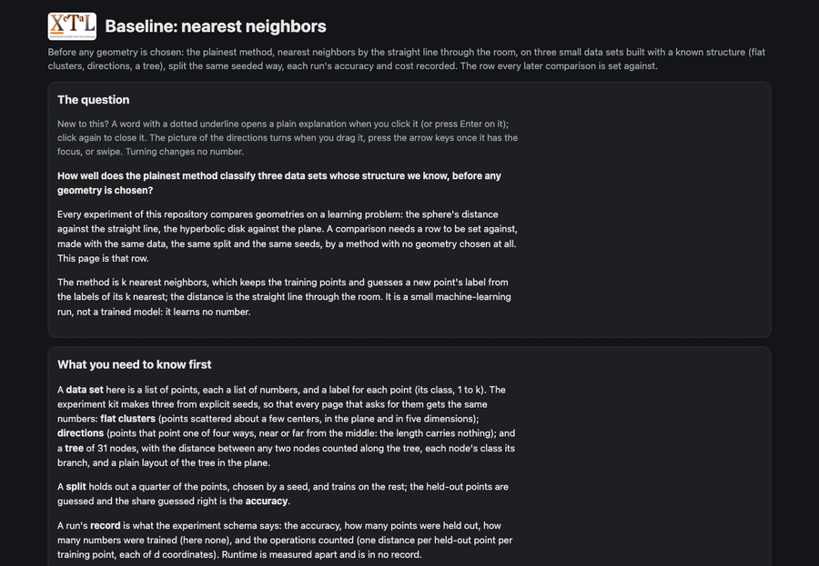
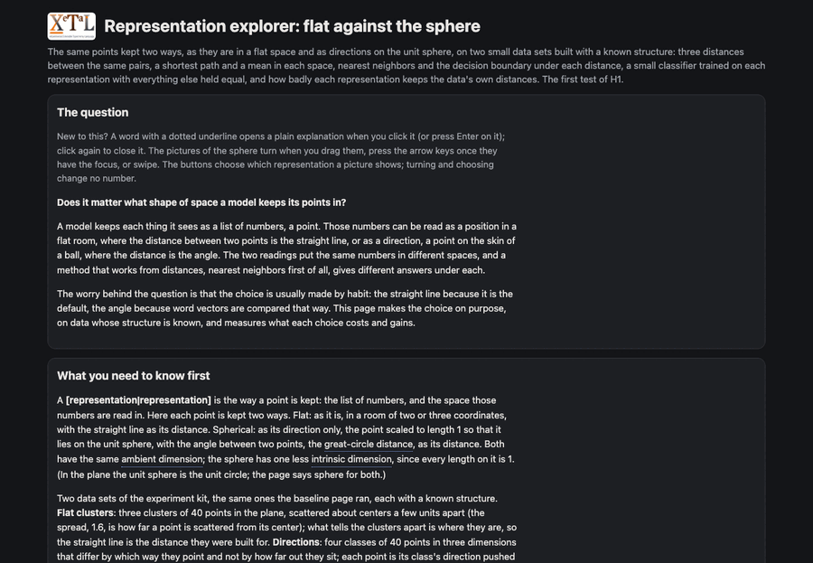

Live
Start here · an introduction
Manifold tour
What a manifold is, on five of them: the circle, the sphere, the torus, the Swiss roll and the Poincare disk, each turning in the browser from X_eTaL's coordinates, with its map beside it and one measurement each of near and far, along the space and through it; and what each is for in the experiments to come.
(p, q) ᵐᶠs̲phereArc 48
The great circle from p to q as 49 points X_eTaL computed; the browser only draws them, turned.
manifoldintrinsic and ambient dimensionlocally flatgeodesicdata manifold

Live
Start here · an introduction
Sphere hello
Six points on the unit sphere: the straight line through it and the great circle along it order every point's neighbors the same way, and the plain average of the points is not on the sphere, where the mean along it is.
ᵐᶠs̲phereMean P
The mean that stays on the sphere, in one call; the plain mean, ('+ r_/ P) / 6.0, is inside it.
manifoldgeodesic distancemean on a manifold

Live
Start here · an introduction
Baseline: nearest neighbors
k nearest neighbors under the straight-line distance on the kit's three data sets (flat clusters, directions, a tree), split the same seeded way, each run's accuracy and cost recorded as the experiment schema says: the row every comparison of H1 is set against, with no geometry chosen yet; and how badly a plain layout of the tree keeps its distances.
(k, train s̲elect X, train s̲elect y) ᵐˡk̲nn held s̲elect X
Learn's nearest neighbors on the held-out quarter, one line; everything else on this page is what was held equal.
nearest neighborsthe experiment kita run's recorddistortion

Live
Representation · classification by nearest neighbors and by a small network on flat clusters and on directions: flat: the points as they are, the straight line vs the sphere: the points' directions, the angle · H1
Representation explorer: flat against the sphere
The same points kept two ways, as they are in a flat space (the straight line) and as directions on the unit sphere (the angle), on the kit's flat clusters and directions: three distances on the same pairs with one worked in full, a shortest path and a mean in each space, nearest neighbors and the decision boundary under each distance, a small classifier trained on each representation with everything else held equal, and the distortion of each representation against its set's own distances; the first test of H1, with the baseline's rows as the row against.
"u:s_tepDirUnit Dut Yd lr" ⁿᵉᵗt̲rain< "3 8 tanh 4 softmax"
Net writes the whole training step, backpropagation and Adam, from the network's spec; the same line on each representation is what makes the two runs the same but for the space.
representationgreat-circle distancecosine distancedecision boundarycross-entropydistortion